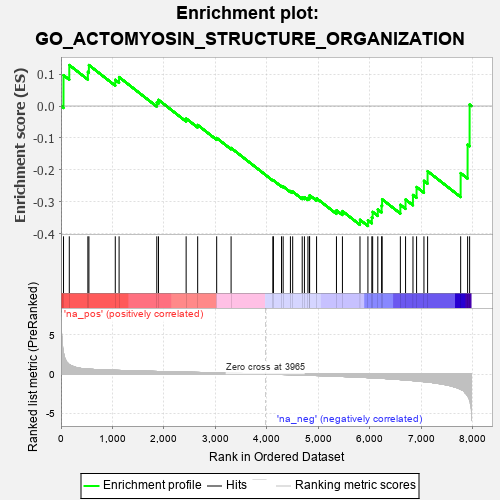
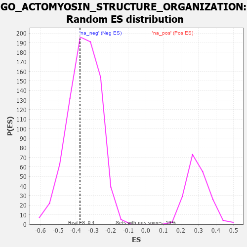

| | | Dataset | 7d |
| Phenotype | NoPhenotypeAvailable |
| Upregulated in class | na_neg |
| GeneSet | GO_ACTOMYOSIN_STRUCTURE_ORGANIZATION |
| Enrichment Score (ES) | -0.37525868 |
| Normalized Enrichment Score (NES) | -1.0619104 |
| Nominal p-value | 0.39431396 |
| FDR q-value | 0.7934363 |
| FWER p-Value | 1.0 |
Table: GSEA Results Summary

Fig 1: Enrichment plot: GO_ACTOMYOSIN_STRUCTURE_ORGANIZATION
Profile of the Running ES Score & Positions of GeneSet Members on the Rank Ordered List
| PROBE | GENE SYMBOL | GENE_TITLE | RANK IN GENE LIST | RANK METRIC SCORE | RUNNING ES | CORE ENRICHMENT | | 1 | TGFB3 | | | 49 | 2.654 | 0.0963 | No |
| 2 | CSRP3 | | | 161 | 1.186 | 0.1281 | No |
| 3 | KIF23 | | | 522 | 0.622 | 0.1067 | No |
| 4 | SRF | | | 542 | 0.615 | 0.1281 | No |
| 5 | MEF2C | | | 1054 | 0.473 | 0.0819 | No |
| 6 | SRC | | | 1128 | 0.459 | 0.0904 | No |
| 7 | SMAD4 | | | 1860 | 0.326 | 0.0108 | No |
| 8 | CUL3 | | | 1893 | 0.321 | 0.0192 | No |
| 9 | MET | | | 2430 | 0.240 | -0.0392 | No |
| 10 | VPS4A | | | 2654 | 0.205 | -0.0594 | No |
| 11 | WNT4 | | | 3023 | 0.146 | -0.1001 | No |
| 12 | SMAD3 | | | 3303 | 0.105 | -0.1313 | No |
| 13 | MTOR | | | 4114 | -0.025 | -0.2325 | No |
| 14 | ABL1 | | | 4125 | -0.027 | -0.2327 | No |
| 15 | WNT11 | | | 4282 | -0.056 | -0.2502 | No |
| 16 | BAG4 | | | 4314 | -0.061 | -0.2517 | No |
| 17 | FRMD5 | | | 4455 | -0.085 | -0.2661 | No |
| 18 | MEF2A | | | 4499 | -0.095 | -0.2679 | No |
| 19 | LIMK1 | | | 4684 | -0.136 | -0.2858 | No |
| 20 | CNN1 | | | 4727 | -0.144 | -0.2855 | No |
| 21 | FLII | | | 4795 | -0.156 | -0.2880 | No |
| 22 | WDR1 | | | 4824 | -0.163 | -0.2852 | No |
| 23 | CNN2 | | | 4828 | -0.163 | -0.2793 | No |
| 24 | ARAP1 | | | 4963 | -0.191 | -0.2888 | No |
| 25 | EPHA1 | | | 5349 | -0.285 | -0.3263 | No |
| 26 | FRMD3 | | | 5465 | -0.311 | -0.3288 | No |
| 27 | BBS4 | | | 5806 | -0.407 | -0.3560 | No |
| 28 | ACTN2 | | | 5960 | -0.458 | -0.3576 | Yes |
| 29 | RAC1 | | | 6036 | -0.484 | -0.3483 | Yes |
| 30 | EVL | | | 6052 | -0.490 | -0.3313 | Yes |
| 31 | ROCK1 | | | 6152 | -0.520 | -0.3237 | Yes |
| 32 | TPM1 | | | 6226 | -0.545 | -0.3119 | Yes |
| 33 | CDC42 | | | 6236 | -0.548 | -0.2918 | Yes |
| 34 | ALMS1 | | | 6590 | -0.704 | -0.3091 | Yes |
| 35 | PAK1 | | | 6691 | -0.757 | -0.2925 | Yes |
| 36 | FHOD3 | | | 6835 | -0.834 | -0.2784 | Yes |
| 37 | MYH11 | | | 6905 | -0.870 | -0.2534 | Yes |
| 38 | MYH10 | | | 7048 | -0.966 | -0.2341 | Yes |
| 39 | LDB3 | | | 7119 | -1.008 | -0.2039 | Yes |
| 40 | TRPM7 | | | 7761 | -1.936 | -0.2100 | Yes |
| 41 | CAV3 | | | 7896 | -2.739 | -0.1211 | Yes |
| 42 | ARRB1 | | | 7935 | -3.377 | 0.0045 | Yes |
Table: GSEA details [plain text format]

Fig 2: GO_ACTOMYOSIN_STRUCTURE_ORGANIZATION: Random ES distribution
Gene set null distribution of ES for GO_ACTOMYOSIN_STRUCTURE_ORGANIZATION